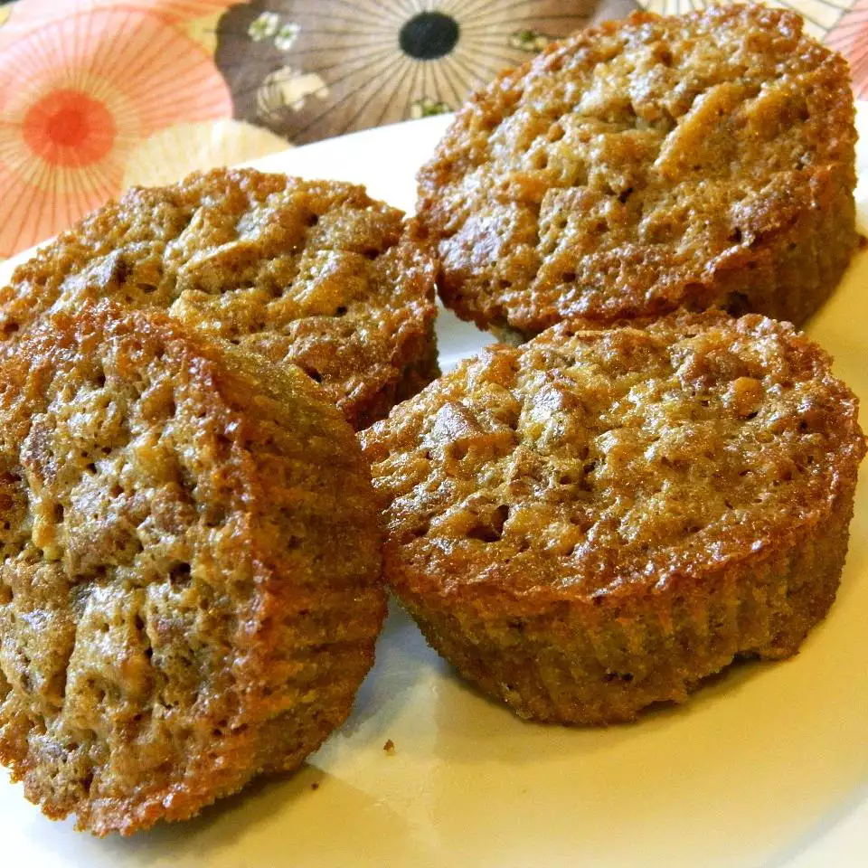

Pecan Pie Cupcakes

Description
If you like the taste of butter pecan, you'll love these pecan pie cupcakes that you can bake up for guests in less than half the time!
Ingredients
- cooking spray
- 1 cup brown sugar
- 1 cup chopped pecans
- ½ cup all-purpose flour
- 2 eggs
- ½ cup butter, melted
- 1 teaspoon vanilla extract, or to taste
Steps
- Preheat the oven to 350 degrees F (175 degrees C). Line a muffin tin with paper liners and coat liners with cooking spray.
- Combine brown sugar, pecans, and flour in a large bowl; make a well in the center.
- Beat eggs in a large bowl with an electric mixer until foamy, 3 to 5 minutes. Fold in butter and vanilla. Pour into the center of the brown sugar mixture. Stir until batter is well mixed.
- Spoon batter into the muffin tin, filling each cup 2/3 of the way.
- Bake in the preheated oven until a toothpick inserted into the center comes out clean, 20 to 25 minutes.